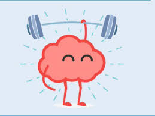

Salud Mental
Introducción
Las personas afectadas por un problema de salud mental, tienen más probabilidades de sufrir otras patologías como diabetes, cardiopatías y cáncer de colon y de mama. Por eso, a la hora de referirse a la salud mental existen muchas asociaciones entre salud mental y enfermedades crónicas que tienen un impacto significativo en las personas, en este articulo aremos referencia ala salud mental de manera Psicologica, emocional y social. En PsicApp nuestros usuarios y pacientes son muy importantes a continuación le proporcionamos el siguiente indice.
Contenidos
¿Qué es la salud mental?
La salud mental incluye nuestro bienestar emocional, psicológico y social. Afecta la forma en que pensamos, sentimos y actuamos cuando enfrentamos la vida. También ayuda a determinar cómo manejamos el estrés, nos relacionamos con los demás y tomamos decisiones. La salud mental es importante en todas las etapas de la vida, desde la niñez y la adolescencia hasta la adultez. ¿Qué son las enfermedades mentales?
Las enfermedades mentales son afecciones graves que pueden afectar la manera de pensar, su humor y su comportamiento. Pueden ser ocasionales o de larga duración. Pueden afectar su capacidad de relacionarse con los demás y funcionar cada día. Los problemas mentales son comunes, hay tratamientos disponibles. Las personas con problemas de salud mental pueden mejorar y muchas de ellas se recuperan por completo.¿Por qué es importante la salud mental?
La salud mental es importante porque puede ayudarle a:- Hacer frente a los problemas de la vida
- Estar físicamente saludable
- Tener relaciones sanas
- Ser un aporte para su comunidad
- Trabajar en forma productiva
- Alcanzar su potencial